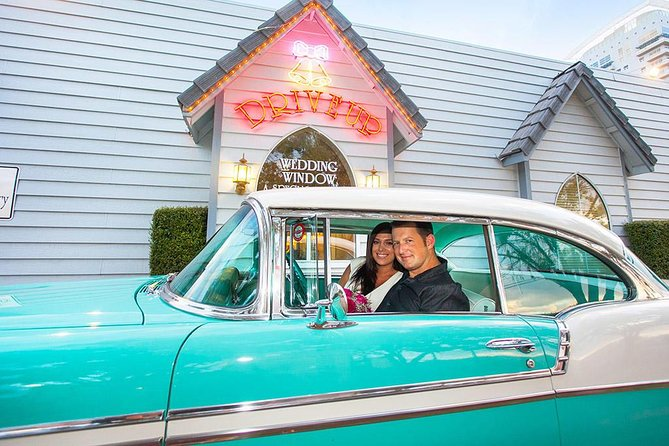
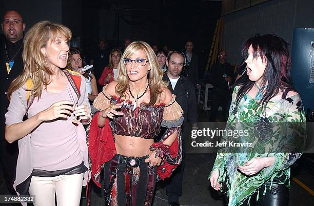

Casamentos Inusitados
Las Vegas é famosa por casamentos rápidos, incluindo cerimônias temáticas com sósias do Elvis Presley.
Capelas Drive-Thru
É possível se casar sem sair do carro em diversas capelas da cidade!
Cidade dos Shows
Las Vegas abriga artistas famosos e shows fixos como Celine Dion e David Copperfield.